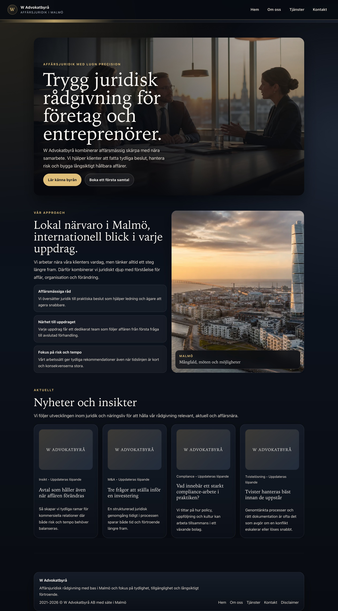
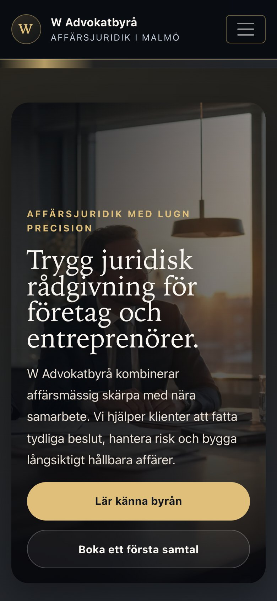
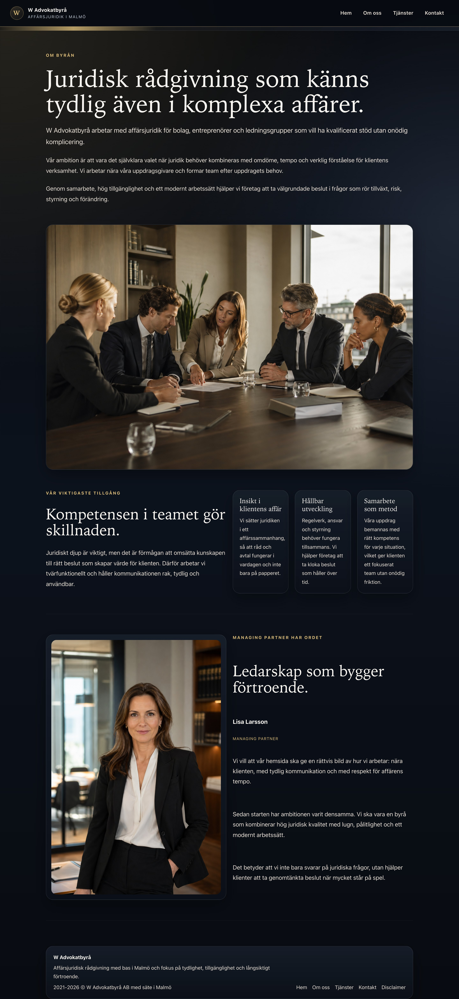
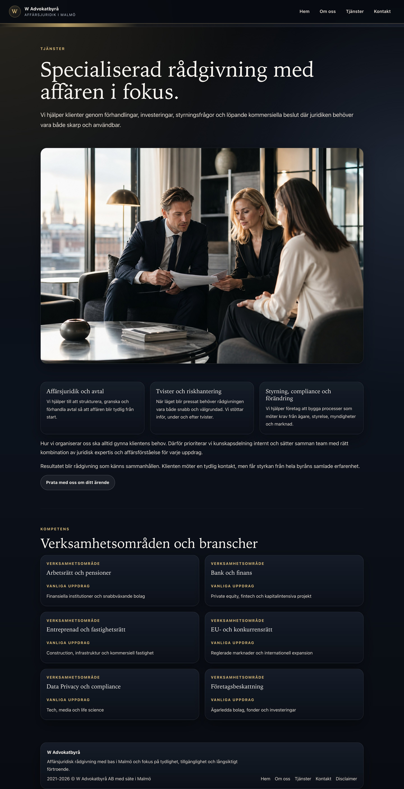
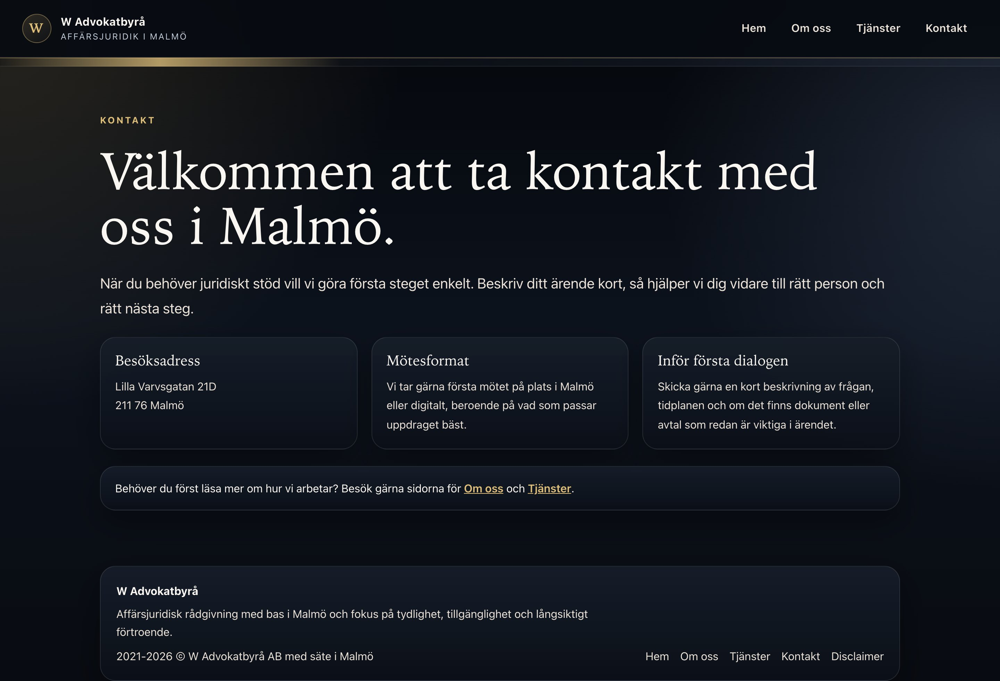

Startsida (desktop)
Hero, Malmö-sektion och nyhetsflöde.

Projektdokumentation
Skärmdumpar från den live deployade webbplatsen. Sidan byggs med React och hostas på Netlify. Denna sida publiceras via GitHub Pages.
Hero, Malmö-sektion och nyhetsflöde.

Mobilvy, 390 px bredd.

Presentation av byrån och managing partner.

Expertis och rättsområden.

Kontaktuppgifter och karta.
